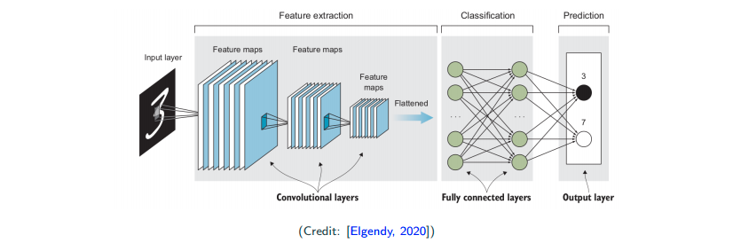
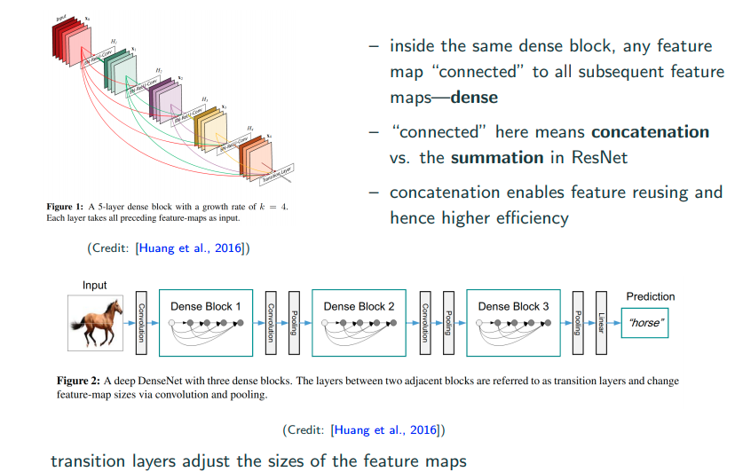

Convolutional Neural Network (CNN): Overview
Acknowledgement: This course (CSCI 8980) is being offered by Prof. Ju Sun at the University of Minnesota in Fall 2020. Pictures of slides are from the course.
From Fully Connected to Convolutional Neural Networks
Find patterns in an image
Digital Images
Digit images can be simply looked as matrices, and each entry of matrices (i.e., pixels) is an integer. We call the traditional MNIST images gray scale level images. Color images are 3-dimensional tensors. R,G,B are respectively treated as a gray scale image. We usually normalize the data to alleviate the effect of noise, by
- dividing the data by its “pixel-depth - 1”
- zero-mean unit-variance
- min-max.
This little change can effect performance to an extent. JPEG by default usually throws some details out from the images. If you’re dealing with questions that every pixel is important, maybe you want to use PNG rather than JPEG since PNG is lossless.
How to find a pattern in images?
Let’s divide it by two questions. We firstly ask whether this object is in this image. Secondly we ask where is the object in the image if this object is in this image. Scan-window method is to take a sample and scan through the entire image to find similarity (distance). Inner product is a measure of similarity, and each time inner product of the original (red) and overlapped (green) patches are taken. If they’re similiar, then the inner product is larger. The output matrix is called the correlation. Now let’s look at the largest magnitude because that will be the canidate match of detection.
Is correlation always reliable? No, a counterexample in this case is that the background is plain white.
Template matching previals in classic image processing
How do you detect the edge? A typical edge looks like left(white) right(black) middle(gray) as the picture above.
Problem with template matching
What are some potential problems? Would scan-window method work here? In practices, there are many variation. This object can be smaller, larger, scaling, rotation, deformation, etc.
Feature-based approach
We may be convinced that the classic template matching slicing window scheme doesn’t work well if there are data augmentation (rotation, scaling, translation, etc). So, is it possible to extract the features first that are invariant to scaling, rotation, deformation? Yes! An era of feature-based methods has begun…
Problems with fully connected networks
Complexity
Fully connected networks are not feasible just looking at the dimension. Images with high-resolution have many pixels, which are the input of neural networks. It’s computational impossible. This is from the complexity and storage point of view.
Locality and ordering
No many people talk about this argument but it’s very important. An image tends to have some local structure, because adjacent pixels of natural images are highly correlated. Natual images are pixel-wise smooth. Fully connected neural networks (FCNNs) treats the input as vector, and it’s even insensitive to any universal permutation of the coordinates of all inputs.
Invariance
It’s not sensitive to where the object is in the image. You always want to do certain levels of invariance in recognition. For intance, if I move the digit 8 around in the image, the neural network should be invariant to translation. Think about moving a digit from one place to another place in the image, in the image pixel matric what we see is some irregualr movements/changes. In short, fully connected network is not invariant to scaling, rotation, translation, etc.
Ideal neural networks for spatial data
We hope to acheive learning features locally. For instance, learn the low-level features such as lines, edges, curves, etc, or a bit high-level featuers such as eyes, ears, etc, which are invariant to translation, rotation, local deformation, etc.
A quick preview of convolutional neural network (CNN)

Input -> Convolution Layers (Feature Extraction) -> Fully Connected Layers (Classification) -> Output
Components of CNNs
Convolution Layer
Convolution is misnomer!

Convolution is actually mathematically a wrong name. It’s pretty much correlation. The only difference here is if you flip or not as shown in the image above. People actually implement correlation and call it convolution… In math notation, for convolution and
for (cross)-correlation.
More on conlution/correlation

In image, people usually call the template in between as filter/kernel. Also, people call the area the filter cover each time in the image as receptive field. Further, people call the output from kernel as feature map.
There are also two concepts, which are padding and stride. Padding is to put 0s outside of the image. People do this in order to catch edge information. Stride is basically meaning step size here. Sometimes if people want to skip one pixel, they will usually set the stride as 2. More information and GIF can be found here. Typically, people only set stride to at most 2.
Connection to fully-connected neural network
Abstractly, you can think of convolution imports local pattern. Think of it in the fully-connected neural network, then convolution makes each neuron connects only to its receptive field, and all neurons share the same weight pattern.
Convolution enforeces local pattern, because each time I only look at local area. By weight sharing, we cut down the number of parameters that we need to learn.
Multiple filters each layer
For one filter, as image above from input volomn to output volomn there is an important summation, which acts just like flatten the matrix. Btw, 2D covolution is moving in 2D. It’s not 3D convolution because it’s not moving in depth but moving 3D tensor in 2D.
Do we reduce the complexity?
Suppose input channels and
output channels of size
- number of parameters if implementing fully connected layer:
- number of parameters if implementing convolution of
?
where
are usually small constants, e.g., 3 in practice
Pooling Layer
Convolution helps to achieve locality, and reduced complexity, what about invariance?
Pooling is not a difficult operation to understand. In the image above, there is a 4x4 image. If the size of pooling receptive field size is 2x2 with a stride of 2. Then I just slide the pooling receptive field over the original image. For max pooling, I select the maximum pixel value of within my pooling receptive field. Other than max pooling, there are also average pooling, i.e., weighed average within the receptive field.
Why pooling?
- deep layer: more filters, which makes us end up with many channels (thicker), so we have to subsample to avoid explosion in computation
- subsampling keep important features; for imaging processing, most of the time people are doing recognition, so what matters is the general shape but not low-level details. So, subsampling is ok.
Do we really achieve invariance?

Let’s look at the image above as top view and bottom view, where the bottem view can be think of the top view’s detector stage move to the left by 1. What we observe is that even though there are movement in detector stage, but the pooling stage is roughly the same, and that’s roughly what we mean by saying pooling can achieve a certain degree of invariance.
Combine covolution and pooling – convolution with strides
idea: convolution with stride 2
convolution + subsampling
One can either do a stride 2 pooling after convolution, or simply a convolution with stride 2. The idea of getting rid of pooling layers is more and more popular within Generative Adversial Networks (GANs).
Why multilayers?
- For efficiency: each object can have different variations, simply using one kernel for each variation of the object is impossible.
- For goodness: Kernels can be shared across digits or all object catogories; low-level features likely sharable
form hierarchy
Hierarchical feature learning
The above are the real output of certain layers of CNNs. Really we see that low-level feature is somewhat similiar.
Computation
How to compute convolution?
Convolution layer is locally connected, weight-sharing fully connected layer. If we vetorize both input and output, the operation can be represented as a matrix multiplication.
More on computation
To compute the convolution
- use (sparse) matrix-vector multiplication (early version of cuDNN)
- ise fast Fourier transform (introduced in later version of cuDNN)
To compute the max-pooling
- forward: just try to pick up the maximum
- backward? what’s
Architectures for classification
Typical design patterns
Feature Extraction (Conv) + Classification (Fully connected)
- Conv: depth increases (more filters), dimension decreases (subsampling) when moving deeper
- one or two fully connected layers for classifaction
LeNet-5 (1998)
At that time, people were stilling using hypertangent, and 5x5 filter, which now has been replaced by ReLU and 3x3 filter.
AlexNet (2012)
Naivly, this can be thought of as a deeper version of LeNet with more convolutional layers and more fully connected layers. This brings a breakthrough on ImageNet competition in 2012, and impressed the computer vision community.
- ReLU as activation
- larger filters: 11x11, 5x5, 3x3
- dropout used for regularization (dropout wasn’t proposed by this paper but made popular by this paper)
- weight decay/regularization
VGG-Net (2014)
This is a further deeper version of AlexNet. (At that time, people really was trying to go deeper after they see the befinit of more layers.) They have some novel modification, which they perform several convolution in a row and followed by a pooling layer. The intuition comes from the associative law of convolution, which is
This is to say that I can have serveral smaller filter (several convolution layers) and gain a roughly (not exactly) the same effect of a single large filter. And you will found the number of parameters reduce significantly.
ResNet (2015)
Sometimes performance get worse when the network is really deep. What’s going wrong? The performance somewhat get degragated during going deeper.
- skip connection
- batch normalization
Intuition for skip connection: If I have a task which has 50 layers to attain optimal performance already, what if I add up to 100 layers? That will bring performance degragation, but if I have skip connection after the 50th layer because I know it doesn’t need 100 layers. If I training algorithm is smart enough, it will make the weights of all the layers after 50th layer to be zeros. Then, without lossing the previous information from eailier layers, even though the latter layers’s weight are zeros, but I can still reach to output layer with skip connection. In addition, skip connection in auto differention package also acts like a skip conenction. Moreoever, skip connection also alleviates vanishing-gradient problem to some extents.
Dense (2016)
No soon after ResNet, Dense Net was proposed to take full adventage of skip connections.

Other models to look at
on accuracy:
on compact model:
Practicle tips
Transfer Learning
We recall that CNNS learn increasingly complex and sementically meaningful features, while they have similiar low-level features. So, lower-level tend to learn features that are generic.
The image above you can see that different objects can share similiar low-level features. So, people can take a pretrain model (take both network architecture and weights) which has been trained on a very large and diverse dataset, as a starting point. And based on the size of dataset of you task, to select a scheme to perform fine tuning as the image below.

Are CNNs only for images?
No, it’s popular in imaging, but also can be used in speed recognition, text classification, video analysis, and time series analysis.
Transposed Convolution
convolution with strides: downsampling
transposed convolution: unsampling
Transposed convolution is often used for segmentation (U-Net), generation, or other regression. The ouputs are structured object such as images, videos, time series, speech, etc.
For unsampling, there are definitely classical way to perform it, which is nearest neighbor/bilinear/bicubic intepolation. In deep learning, people want to learn interpolation with learnable filter, that’s why the transposed convolution come into play. Actually, transposed convolution is also called fractionally strided convolutions or deconvolution.
The graph and more details are here.
Normalization
normalization in different directions/groups of the data tensors
- N is the batch size
- C is the channel size
- WH is the per output dimension (1D for fully connected, but 2D for CNNs)
batch normalization is popular, but with layer/group normalization you can have small N (batch size), reach simplicity (training/test normalizations are consistent).